גיבוש צוות וחברות
גיבוש שונה מהרגיל: הולכים, טועמים, מדברים — ויוצאים עם סיפור משותף. מתאים לצוותים קטנים וגדולים.
לתיאום גיבוש צוות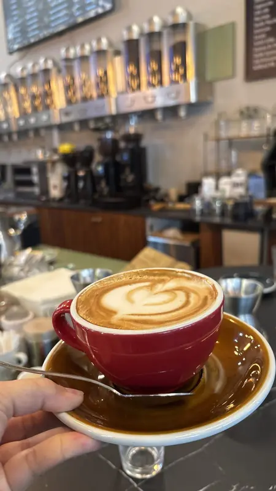
סיורי קפה · תל אביב ויפו
זה מסע קפה בין הטעמים, הריחות והסיפורים — הכל בסיור אחד חוויתי.
הסיור
Coffee With Me הוא סיור קפה מודרך בתל אביב וביפו בהובלת דיקלה דנינו: כ־3 שעות של הליכה בין בתי קפה ייחודיים — חלקם נסתרים מהעין — עם טעימות קפה ומאפים, וסיפורים על האנשים, הקלייה והתרבות שמאחורי הכוס.
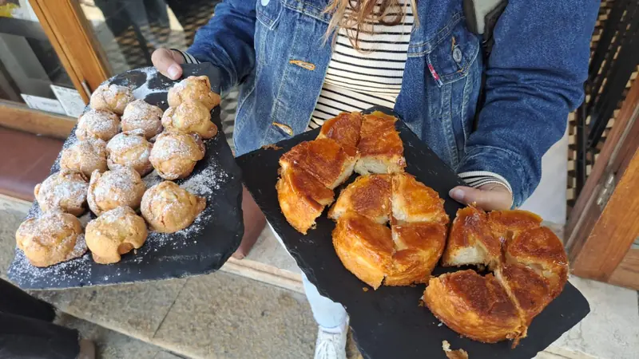
למי זה מתאים
כל סיור מותאם לקבוצה: לאופי, לגודל ולמה שמעניין אתכם. כתבו לדיקלה ותקבלו הצעה שמתאימה בדיוק לכם.
גיבוש שונה מהרגיל: הולכים, טועמים, מדברים — ויוצאים עם סיפור משותף. מתאים לצוותים קטנים וגדולים.
לתיאום גיבוש צוותיום הולדת, מפגש משפחתי או אירוח — חוויה שמתאימה לכל גיל, גם למי שלא שותה קפה.
לתיאום סיור משפחתיבוקר אחר בעיר: בתי קפה שלא הכרתם, מאפים טובים ושיחה — דרך חדשה להכיר את תל אביב ויפו.
לתיאום סיור לזוג או לחבריםקלייה, מקורות, שיטות הכנה ואיפה כדאי לקנות ציוד — גם בריסטות מספרים שיצאו עם ידע חדש.
לתיאום סיור לחובבי קפה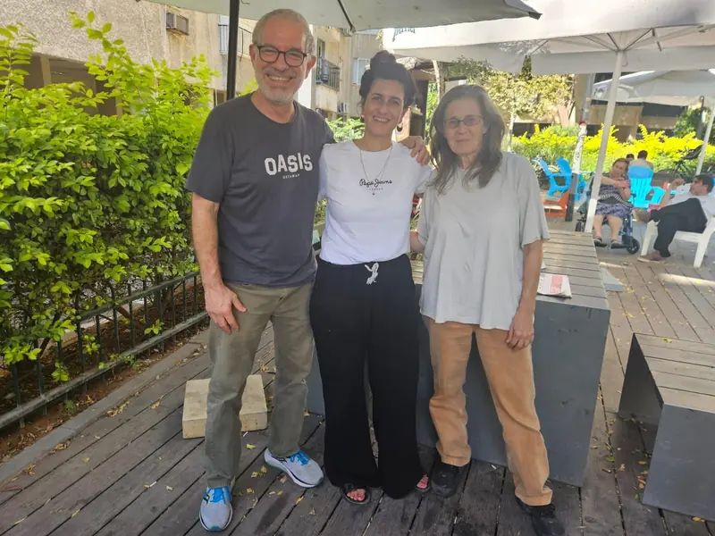
מי אני
יוצרת תוכן, חוקרת תרבות הקפה ובעלת הבלוג Coffee With Me — הבלוג המוביל בישראל לחובבי קפה ותרבות בתי קפה. כותבת במגזין ״שותים״, ומסתובבת שנים בין בתי קפה בארץ ובעולם.
עשר שנים עבדה דיקלה כעובדת סוציאלית, ואחר כך ניהלה קהילות וחיה אותן בתוך ת״א. מכאן היא יודעת מה אנשים באמת אוהבים: להכיר מקומות, לשמוע סיפורים ולפגוש את מי שעומד מאחורי הקפה.
היום היא לוקחת אתכם בדיוק לשם, לבתי קפה קטנים ועצמאיים שכדאי להכיר.
כתבו עלינו: פרופיל ב"המסלול שלי", TheMarker, ספטמבר 2026 - לקריאת הראיון
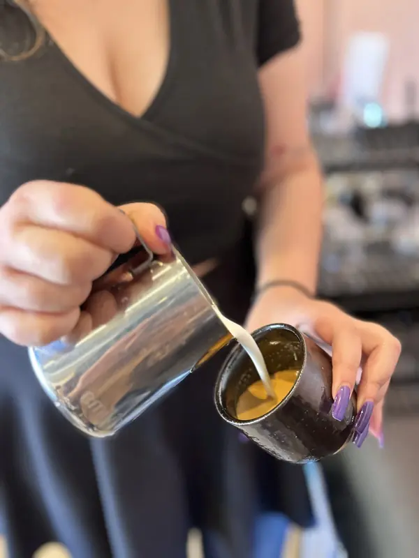
החוויה
נלמד מה הופך קפה למעולה — מעבר לטעם — ואיך ריח, סביבה ואנשים מעצבים את החוויה. תטעמו סוגים שונים, כל אחד עם סיפור וקלייה אחרת, ותגלו מה מתאים בדיוק לכם.
בואו נתאם סיורמה אומרים
הודעות שהגיעו לדיקלה אחרי סיורים — מצוותים, ממשפחות ומחובבי קפה.
דקלה יקרה, תודה על סיור של טעם ושל ריח. סיור שפתח לנו דלת לעולם הקפה. תודה על הידע ועל ההזדמנות להעמיק היכרות עם יפו היפה.
דיקלה הדריכה את הצוות שלנו בסיור חווייתי טעים ומרתק ביפו. למדנו על קפה בהקשר התרבותי והקהילתי, גילינו אנשים מקסימים ומקומות מיוחדים וגם טעמנו מגוון סוגים. מומלץ בחום — גם לצוותים, ואפילו מתאים לאירועים משפחתיים.
היה לנו מדהים ואת מקסימה, נדיבה, מרתקת ויודעת המון. כל כך נהנינו ובוודאי נספר לחברים! תודה על רשימת המקומות שתשלחי.
בתור בריסטה לשעבר וחובב קפה, למדתי המון דברים חדשים — על כל התהליך עד שמגיעים לכוס הקפה, על מקומות וקהילות ששווה להכיר, כולל איפה כדאי לשבת לקפה ואיפה לקנות ציוד. דיקלה הייתה מקסימה, עם הרבה ידע, והצליחה ליצור אווירה מאוד נעימה וכיפית לאורך כל הסיור. ממליץ בחום!
דקלה תודה רבה על סיור משפחתי מרתק. תודה על הארגון והיוזמה — מפגש משפחתי מהנה.
תודה רבה על הסיור המעשיר בידע ובטעמים. חשיפה נהדרת לעומק העולם של תרבות הקפה מתוך רחובות יפו הקסומים.
ההודעות המקוריות, כפי שהגיעו בוואטסאפ:
מהשטח
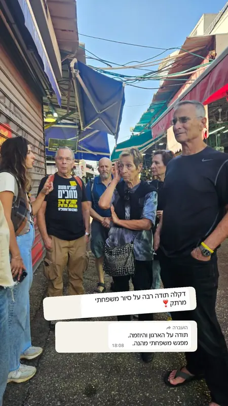
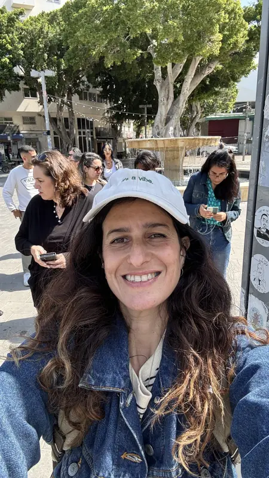
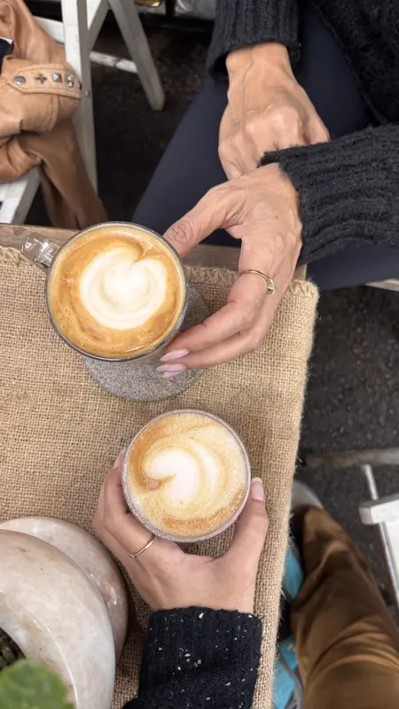
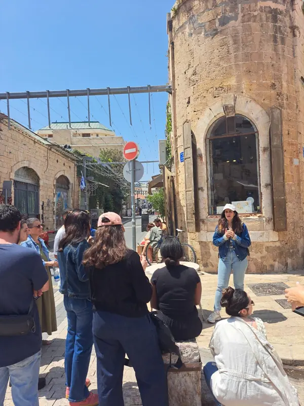
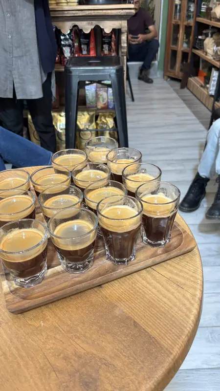
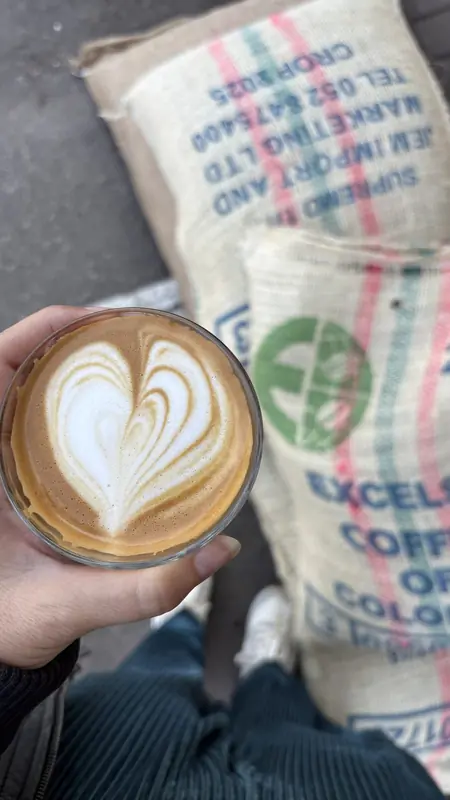
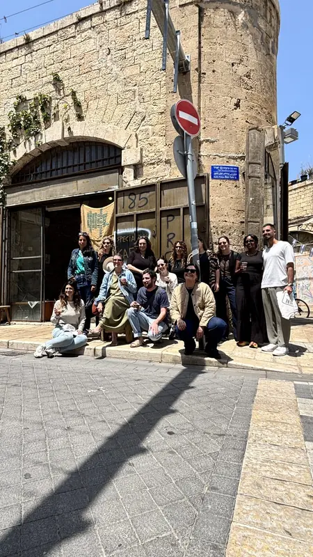
איך מזמינים
וואטסאפ או טלפון ל־052-357-3404. ספרו כמה אתם ומתי נוח לכם.
תל אביב או יפו, מספר תחנות, כשרות ואורך הסיור — לפי הקבוצה והתקציב.
בבוקר, בבית הקפה הראשון. מכאן זה כבר טעמים, ריחות וסיפורים.
שאלות נפוצות
כמה זמן זה נמשך, איפה זה מתקיים, ומה עם מי שלא שותה קפה — ריכזנו כאן את התשובות.
כ־3 שעות. אפשר להתאים סיור ארוך יותר עם נקודות עצירה וטעימות נוספות — בהתאם לתקציב שלכם.
במספר מוקדים בתל אביב וביפו לפי בחירתכם. אפשר לקיים אותו גם בערים גדולות אחרות כמו ירושלים וחיפה.
3 נקודות קפה ו־2 נקודות לטעימות של מאפים. רוצים יותר? אפשר להוסיף תחנות עצירה וטעימה נוספות בתיאום מראש.
הסיור מתאים לכולם! גם מי שלא שותה קפה ייהנה מהסיפורים, מהריחות ומהתרבות — וכל אחד יכול לבחור שתייה שמתאימה לו.
ממש לא. הסיור בנוי כך שגם מי שרק אוהב לשתות קפה ייהנה — וגם חובבי קפה ותיקים ובריסטות יוצאים ממנו עם ידע חדש ומקומות שלא הכירו.
בהחלט. הסיור מתאים לזוגות, לחברות, למשפחות ולגיבושי צוותים — ומותאם לאופי ולגודל של כל קבוצה.
הוא יכול להיות כשר בהתאם לבחירתכם. הקפה עצמו כשר, ובנוגע לנקודות שבהן עוצרים לאכול מאפים — הם יהיו כשרים על פי בקשתכם.
בעיקר בשעות הבוקר. כדי לקיים סיור בשעות אחר הצהריים יידרשו התאמות מיוחדות.
המחיר נקבע לפי גודל הקבוצה, מספר התחנות ואורך הסיור. כתבו או התקשרו ונתאים יחד הצעה שמתאימה לכם.
שולחים הודעת וואטסאפ או מתקשרים ל־052-357-3404, מספרים כמה אתם, מתי ואיפה נוח לכם — ודיקלה מתאימה לכם מסלול, אורך סיור והצעת מחיר.
Coffee With Me
לזוגות, חברות, משפחות וצוותים — כתבו או התקשרו, ונמצא מועד שמתאים.
@_coffee_with_me__